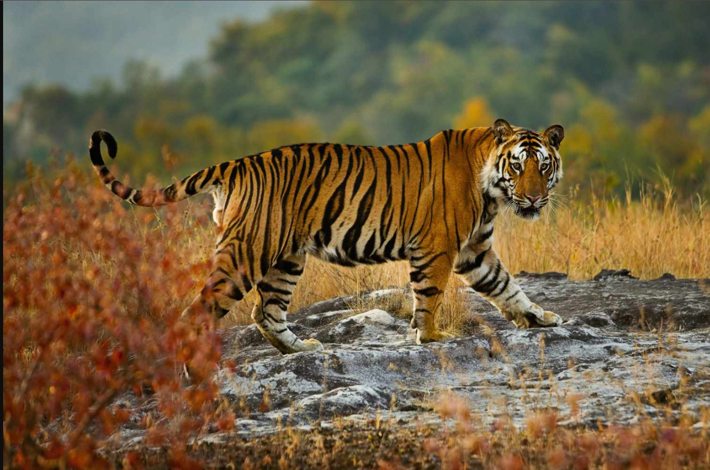
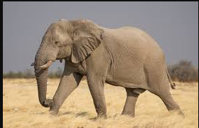
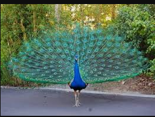

The national animal of India, known for its strength and beauty. Found in Sundarbans, Ranthambore, and Jim Corbett.

A gentle giant and a symbol of wisdom. Commonly seen in Kerala, Assam, and Karnataka forests.

The national bird of India, famous for its colorful feathers and beautiful monsoon dances.